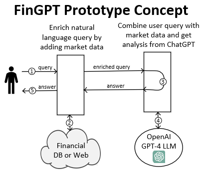

The prototype accepts queries about an equity and returns stock market information and analysis.
Enriched User Query - Ford
According to Alpha Vantage, the current Price-to-Earnings ratio for Ford Motor Company is 11.52. Profit Margin is 0.0247. Market Capitalization is 49431953000. The current stock price is 12.4450 and the target price is 13.07. Can you provide a financial analysis based on these data points? Are there areas where the company is struggling?
Chat Completion Message (content=
Based on the data provided, Ford Motor Company appears to possibly be undervalued given a Price-to-Earnings ratio of 11.52. The P/E ratio is a valuation ratio, calculated by dividing a company's market value per share by earnings per share (EPS). In the broad market context, a P/E ratio of around 11.52 is relatively low. The average P/E ratio tends to hover around 20-25 for the companies in the S&P 500, so in comparison Ford's P/E ratio might suggest it is undervalued, assuming all other factors being equal.
With regard to profit margin, Ford's profit margin of 2.47% is thin. This suggests that Ford isn't retaining much profit from its revenues. For auto manufacturers, the average net profit margin is usually around 5-10%. In comparison, Ford's current profit margin indicates it is struggling to convert its top-line revenue into bottom-line profit which might be due to high costs, inefficiencies, or a sign of intense competition.
The market capitalization of USD 49.43 billion suggests that Ford is a large-cap stock. Given that such companies are usually less volatile than smaller ones, the investment in Ford might be considered comparatively stable, but this needs further comprehensive evaluation beyond market cap.
The current stock price at $12.4450 being lower than the target price of $13.07 also suggests a potential upside for investors. That could mean that financial analysts expect Ford's stock price to increase in the future.
However, for a complete assessment, it would be important to take into account other fundamental and technical factors such as revenue growth, debt levels, upcoming company-specific news/events and overall market conditions. This analysis is also conducted at a single point in time and values may change rapidly with new data or market conditions. Therefore, it is advisable to constantly monitor the financial state of the company and consider engaging a professional financial advisor for in-depth analysis and advice.
role='assistant', function_call=None, tool_calls=None)
Enriched User Query - Boeing
According to Alpha Vantage, the current Price-to-Earnings ratio for The Boeing Company is None. Profit Margin is -0.0286. Market Capitalization is 126297940000. The current stock price is 207.0000 and the target price is 258.72. Can you provide a financial analysis based on these data points? Are there areas where the company is struggling?
Chat Completion Message (content=
Based on the available data, we have several pointers to consider:
1. The Price-to-Earnings (P/E) ratio is not available. This could mean the company has not been profitable over the past 12 months, which perfectly aligns with the negative profit margin of -0.0286, implying the company is currently facing financial difficulties.
2. Boeing incurs a loss of approximately 2.86% on every dollar of sales, as indicated by the Negative Profit Margin. The company is spending more on costs (operating, financial, etc.) than it is receiving in revenue. This reflects an inefficiency in cost management and is a potential area of struggle for Boeing.
3. The stock's current price is lower than the target price, which signals that market analysts anticipate an increase in its value. However, the condition of Boeing's profitability might make this growth target challenging to achieve in the short term given the negative profit margin.
4. A substantial Market Capitalization of $126,297,940,000 suggests that Boeing is a large-cap stock. The company obviously remains a significant player in its sector, possibly benefitting from economies of scale and a strong market presence.
In summary, while Boeing has a sizeable market capitalization and its stock is projected to grow in the future, it is currently struggling with profitability. To address the negative profit margin, it may need to identify and implement cost reduction measures, improve operational efficiency, or increase revenue, all while navigating an ever-competitive aerospace market. Additionally, the lack of a P/E ratio due to a lack of profitability places investors in a position where they can't evaluate Boeing's earnings relative to its share price, which could influence future investment decisions.
role='assistant', function_call=None, tool_calls=None)
Financial Analysis of The Boeing Company